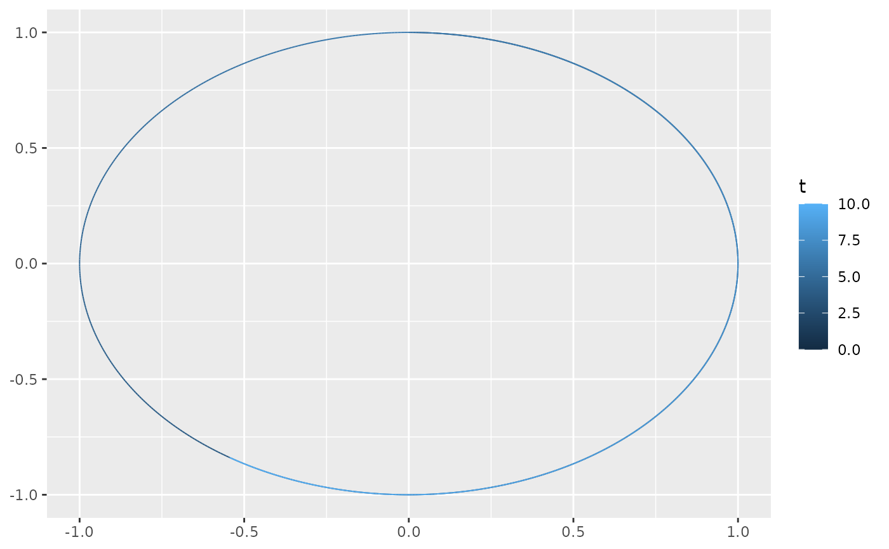
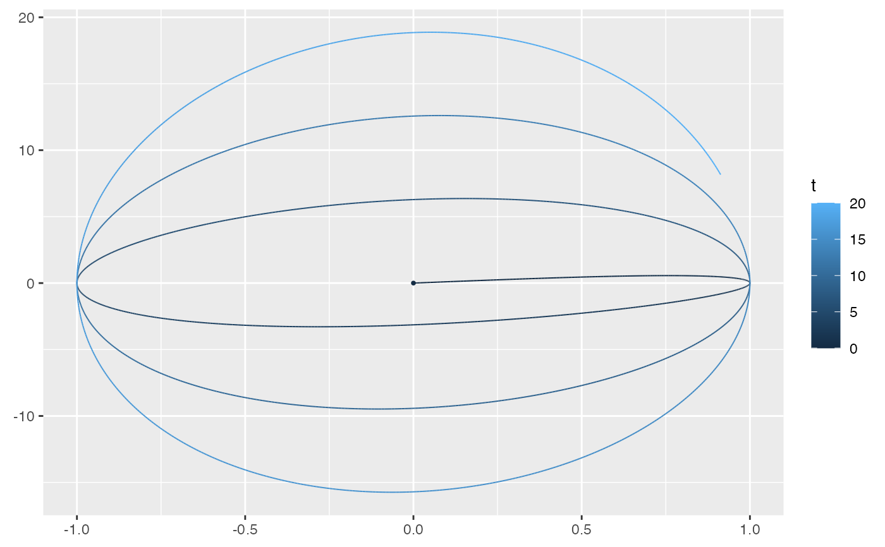
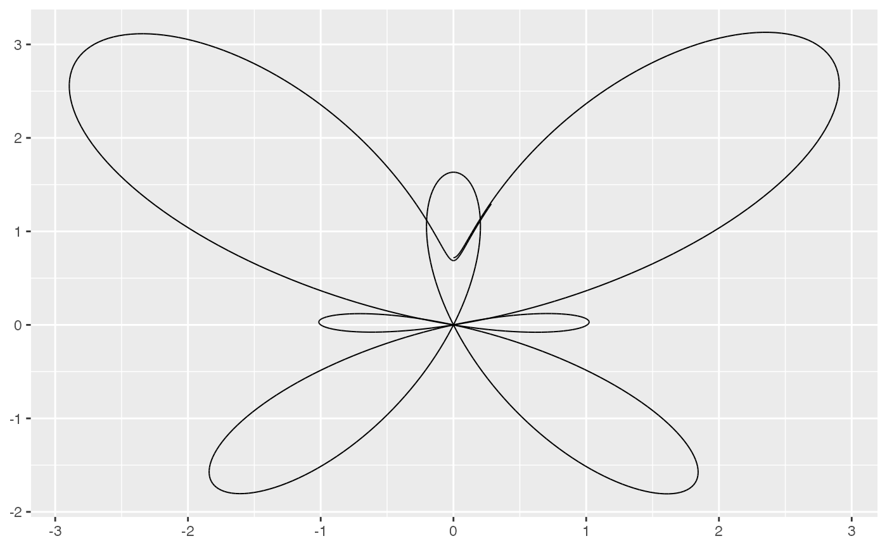
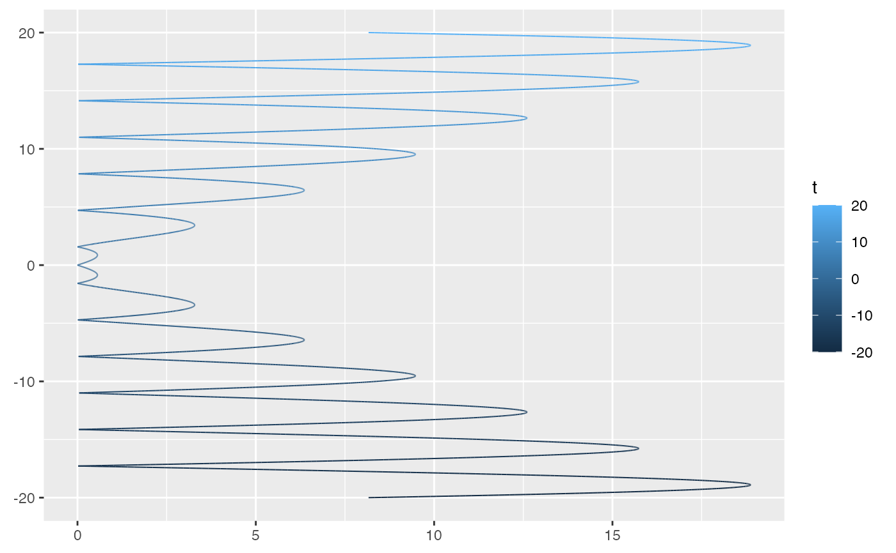
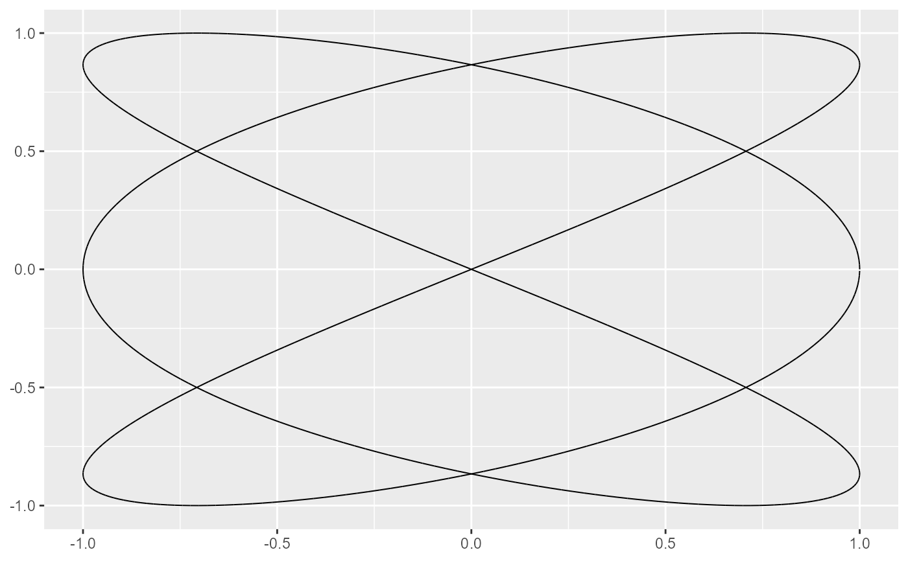
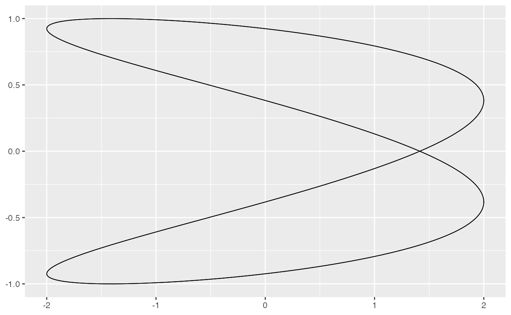
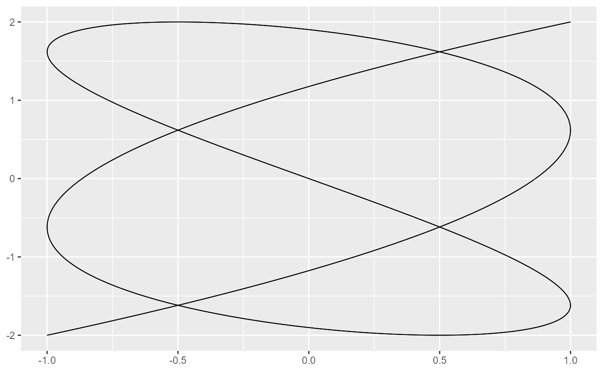
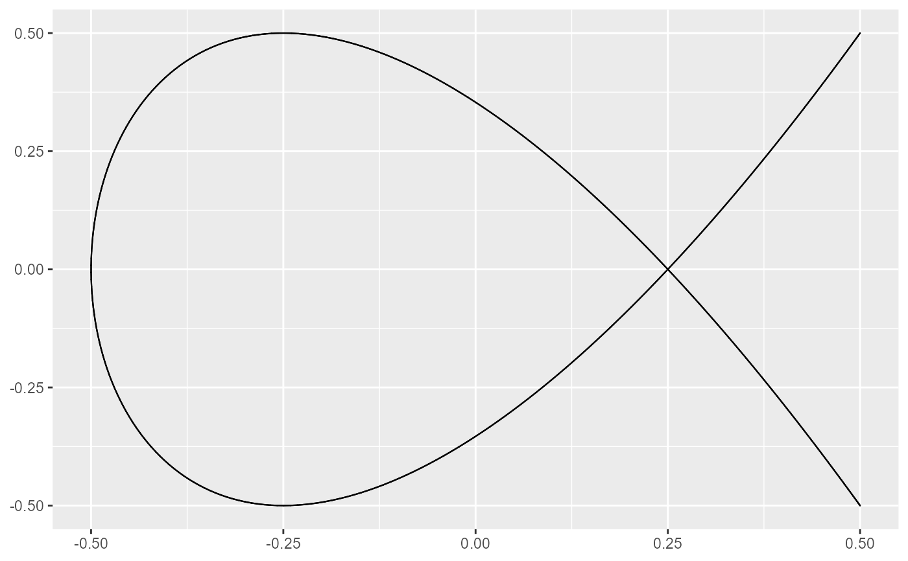
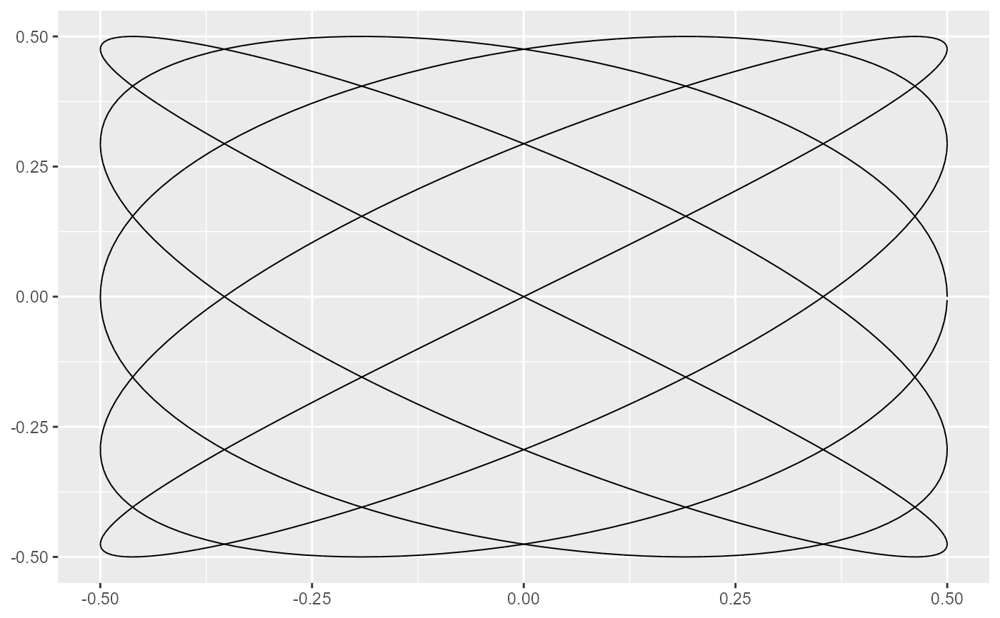
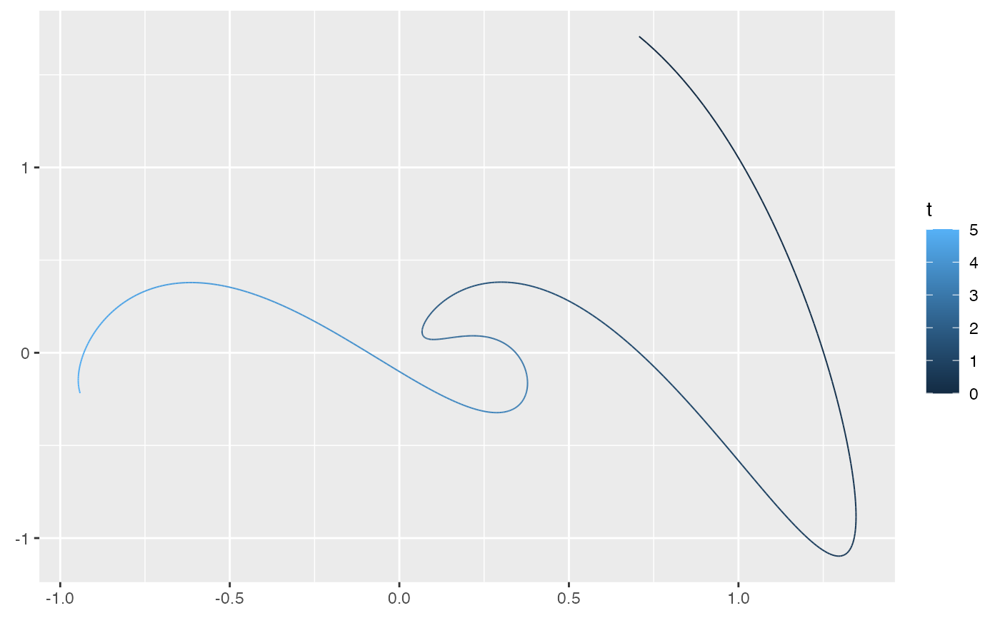

These functions provide convenient ggplot2 layers for drawing streams
generated by mapping a one-dimensional input (typically time) to
two-dimensional coordinates. A user-defined function (fun) specifies the
mapping by taking a numeric scalar (e.g. time) and returning a numeric vector
of length 2 (representing \((x, y)\)). The underlying Stat_1d_2d evaluates
fun over a time sequence spanning tlim in increments of dt, and
ggvfields::GeomStream renders the resulting path.
Arguments
- mapping
A set of aesthetic mappings created by
ggplot2::aes(). Additional aesthetics such ascolor,size,linetype, andalphacan be defined. The default mapping setscolor = after_stat(t).- data
A data frame containing the input data. In many cases, no data needs to be supplied.
- position
Position adjustment, either as a string or the result of a call to a position adjustment function.
- ...
Other arguments passed on to
ggplot2::layer().- na.rm
Logical. If
FALSE(the default), missing values are removed with a warning.- show.legend
Logical. Should this layer be included in the legends?
- inherit.aes
Logical. If
FALSE, overrides the default aesthetics rather than combining with them.- fun
A function that defines the mapping from a scalar input (typically time) to a two-dimensional coordinate. It should take a numeric scalar and return a numeric vector of length 2 representing \((x, y)\). (Required)
- tlim
Numeric vector of length 2. The range of the time sequence, given as
c(t_start, t_end). Defaults toc(0, 10).- dt
Numeric. The time increment for evaluating
fun. Defaults to0.01.- args
List of additional arguments passed on to the function defined by
fun.- tail_point
Logical. If
TRUE, a point is drawn at the tail (starting position) of the stream.- arrow
A
grid::arrow()specification to add arrowheads to the stream. Defaults toNULL(no arrowhead). Passgrid::arrow()to add one.- stat
The statistical transformation to use on the data for this layer. Defaults to Stat_1d_2d.
Value
A ggplot2 layer that computes and plots a stream by evaluating a one-dimensional function over a time sequence.
Details
In many cases these layers are useful for visualizing dynamic systems or flows where a one-dimensional parameter (often time) drives movement in two-dimensional space.
Examples
f <- function(t) {
c(sin(t), cos(t))
}
ggplot() + geom_function_1d_2d(fun = f)

f <- function(t) {
c(sin(t), t * cos(t))
}
ggplot() +
geom_function_1d_2d(fun = f, tlim = c(0, 20), tail_point = TRUE)

f <- function(t) {
x <- sin(t) * (exp(cos(t)) - 2 * cos(4 * t) - (sin(t / 12))^5)
y <- cos(t) * (exp(cos(t)) - 2 * cos(4 * t) - (sin(t / 12))^5)
c(x, y)
}
ggplot() +
geom_function_1d_2d(fun = f, tlim = c(0, 6.5), arrow = NULL, color = "black")

f <- function(t) c(abs(cos(t)*t), t)
ggplot() + geom_function_1d_2d(fun = f, tlim = c(-20, 20))

# Lissajous curve
lissajous <- function(t, A = 1, B = 1, a = 3, b = 2, delta = pi/2) {
c(A * sin(a * t + delta), B * sin(b * t))
}
ggplot() +
geom_function_1d_2d(
fun = lissajous, tlim = c(0, 2 * pi), color = "black", arrow = NULL,
args = list(A = 1, B = 1, a = 3, b = 2, delta = pi/2)
)

# Variations on Lissajous curves
ggplot() +
geom_function_1d_2d(
fun = lissajous, tlim = c(0, 2 * pi), color = "black", arrow = NULL,
args = list(A = 2, B = 1, a = 4, b = 2, delta = pi/4)
)

ggplot() +
geom_function_1d_2d(
fun = lissajous, tlim = c(0, 2 * pi), color = "black", arrow = NULL,
args = list(A = 1, B = 2, a = 5, b = 3, delta = pi/3)
)

ggplot() +
geom_function_1d_2d(
fun = lissajous, tlim = c(0, 2 * pi), color = "black", arrow = NULL,
args = list(A = 0.5, B = 0.5, a = 2, b = 3, delta = pi/6)
)

ggplot() +
geom_function_1d_2d(
fun = lissajous, tlim = c(0, 2 * pi), color = "black", arrow = NULL,
args = list(A = 0.5, B = 0.5, a = 5, b = 4, delta = pi/2)
)

# Harmonic cuves
f <- function(t,
A1 = 1, A2 = 1, A3 = 1, A4 = 1,
f1 = 1, f2 = 2, f3 = 3, f4 = 4,
p1 = 0, p2 = pi/4, p3 = pi/2, p4 = 3*pi/4,
d1 = 0.1, d2 = 0.2, d3 = 0.3, d4 = 0.4) {
x <- A1 * sin(t * f1 + p1) * exp(-d1 * t) + A2 * sin(t * f2 + p2) * exp(-d2 * t)
y <- A3 * sin(t * f3 + p3) * exp(-d3 * t) + A4 * sin(t * f4 + p4) * exp(-d4 * t)
c(x, y)
}
ggplot() + geom_function_1d_2d(fun = f, tlim = c(0, 5))
